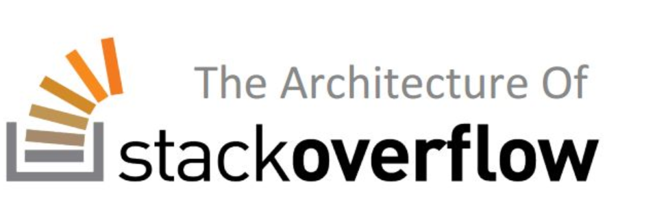

1.GitHub
https://github.com
这是开发者最为重要的网站了吧，代码托管网站。大概大一下学期才注意到这个网站，各种资源应有尽有，想要什么轮子，上去搜就好了。最令我震惊的是，里面还有这种网课学习资料，清华北大浙大等名校计算机专业所有课程的资料都齐全，互联网时代真的太便利了。


https://github.com
这是开发者最为重要的网站了吧，代码托管网站。大概大一下学期才注意到这个网站，各种资源应有尽有，想要什么轮子，上去搜就好了。最令我震惊的是，里面还有这种网课学习资料，清华北大浙大等名校计算机专业所有课程的资料都齐全，互联网时代真的太便利了。
https://stackoverflow.com/
这个网站也挺有用的，之前我查找一个C++问题，搜索的结果都答不到点上，在上面看到一个美国人的回答才如梦初醒。后来学习过程中遇到什么 问题，上去搜一下，大概率能搜到答案。缺点也很明显，这是一个英语网站，大多数回答都是英文，所以要有点计算机英语基础。至于同样英文网站的GitHub，我只能感慨，中国程序员太厉害了，中文项目一点也不少，可以说GitHub的繁荣离不开中国人。
https://www.bilibili.com/
或许最初这只是一个二次元爱好者的聚集地，但现在B站应该可以算是中国的油管吧。我在高中的时候入坑B站，申请会员需要答题就让我知道这个网站应该有着素质不错的成员，果然这里有无数的沙雕网友逗你开心，逛B站也成为我高中生活最快乐的消遣方式。上了大学才发现B站也可以是一个学习网站，甚至中央都表扬过B站。跟着B站上的老师学了高数、离散数学、线性代数、数字逻辑、概率论、计算机组成原理等等，我一般是在课堂上听一遍，课后快到考试周了跟着B站视频复习一遍，很稳！我爱死这个小破站了！
https://www.icourse163.org/
这个算是对B站的一个补充的，其实B站中很多学校视频都是转自这里的，很多网课其实是侵权的，随时可能被B站删掉。虽然有些可能需要收费，但也还能接受，至少质量有保证。
https://www.zhihu.com
为什么要提知乎这个看似很无关的网站？我主要觉得这是一个可以用来增长见识的社区，虽然现在它一点点的向微博贴吧靠近。 知乎给自己的定位是一个网络问答社区，用户在上面分享自己专业的知识和见解。据统计与计算机相关的用户占总用户很大的比重，可能大家上班都在划水? 也有很多大佬直接在知乎上写博客，平时逛逛知乎把握一下行业动向，听听大佬吹吹牛逼，很有意思。
https://www.cnblogs.com/

博客园是一个面向开发者的知识分享社区。自创建以来，博客园一直致力并专注于为开发者打造一个纯净的技术交流社区，推动并帮助开发者通过互联网分享知识，从而让更多开发者从中受益。博客园的使命是帮助开发者用代码改变世界。
https://www.csdn.net/
AI社区——在线实验平台 平台定位 为AI爱好者提供一站式从入门到熟练运用到工作中的学习平台 提供拟真实验环境，让学员学习后直接具备在公司真实线上环境完成分配的工作内容能力 全面提升学员基础能力+编码能力+实战能力，一次补齐后续工作中所有短板 平台特色 一站式AI学习平台，提供常用AI数据集、个人云存储、模型训练、结果导出功能 Web Shell全拟真生产环境，真实体验公司线上实际生产流程，学习和实践高度结合 多环境快速切换，搭配高配置GPU，快速学习、实践AI课程 在线答题巩固AI基础能力，在线编程提升代码编写能力
https://www.w3school.com.cn/
就算不去学前端，我们多多少少也要了解一些相关知识，全球最大的WEB技术资源网站值得拥有。
https://www.runoob.com/
个人觉得菜鸟教程提供了较为全面，系统详细的教程，广告少，界面简约，听说网站最早是一个人写的，很牛。这个网站挺适合新手做辅助，个人觉得就是有些教程获取不到较为详细的说明。


© Tam 2020 | All Right Reserved